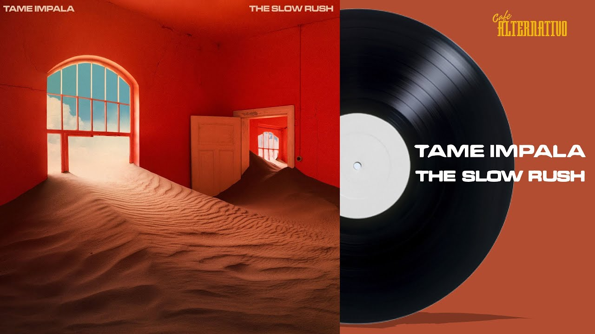

El viaje que se da en este cuarto álbum de la banda, se centra en gran medida en ese concepto y visión que le damos a la vida, a través del paso del tiempo: lo que hicimos en el pasado, lo que hacemos en el presente y lo que haremos en un futuro. Desde ese panorama, Parker vuelve con un nuevo aire repleto de sonidos electrónicos, muy apegados al pop psicodélico, así como también a ciertos momentos de rock suave. Además de ello, es muy curioso pensar que el álbum llegó en un momento en el cual el mundo estaba a las puertas de una pandemia global, en donde este concepto del tiempo tendría un papel central. Es una reflexión interesante que de alguna forma se dio entre el cruce del lanzamiento de un disco y la llegada de un virus que le daría otra mirada a la existencia humana.
